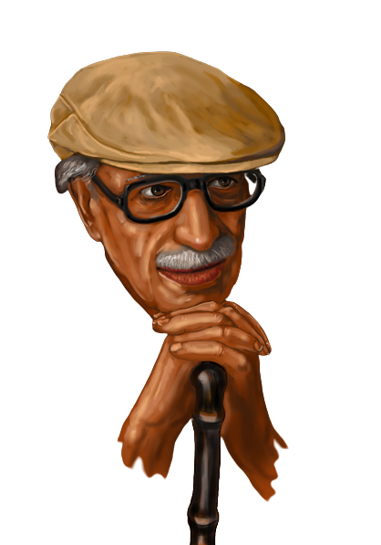

أهلا
توفيق الحكيم
أديب وروائي وكاتب مسرحي مصري، يعد من رواد الأدب الحديث وفن الكتابة المسرحية. وصفه النقاد بأنه "رائد المسرح الذهني"، ألف نحو 100 مسرحية و62 كتابا
أديب وروائي وكاتب مسرحي مصري، يعد من رواد الأدب الحديث وفن الكتابة المسرحية. وصفه النقاد بأنه "رائد المسرح الذهني"، ألف نحو 100 مسرحية و62 كتابا
معرض كتب توفيق الحكيم
created with
Free Website Builder .